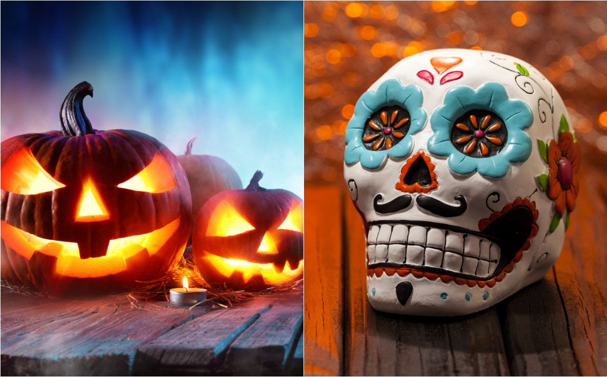
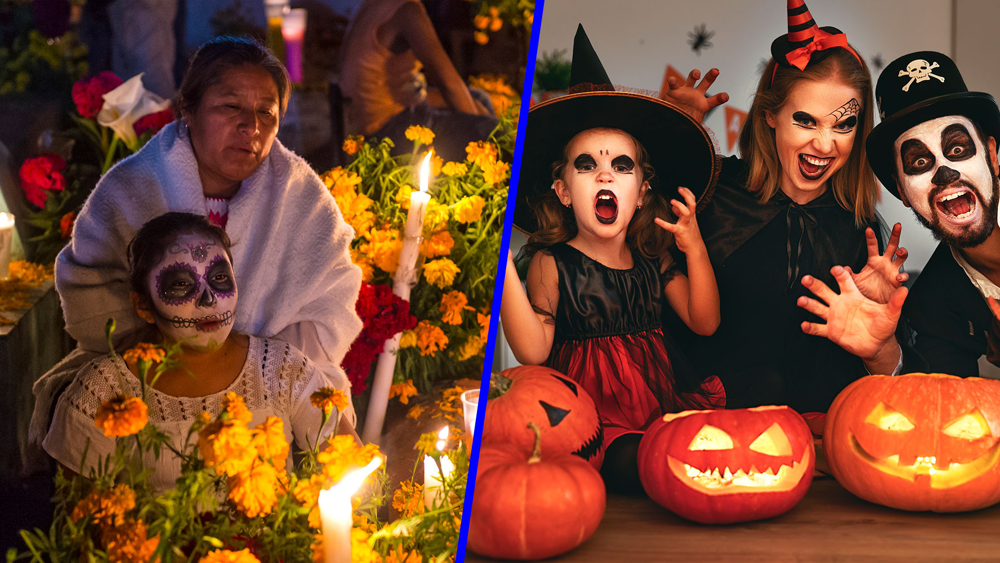
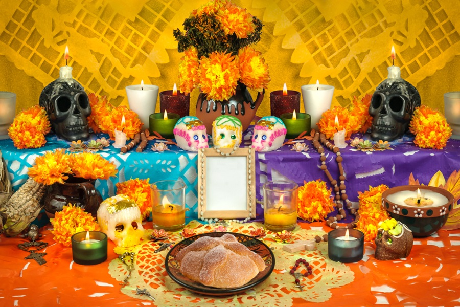
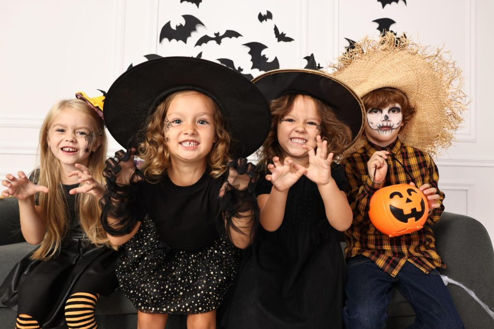
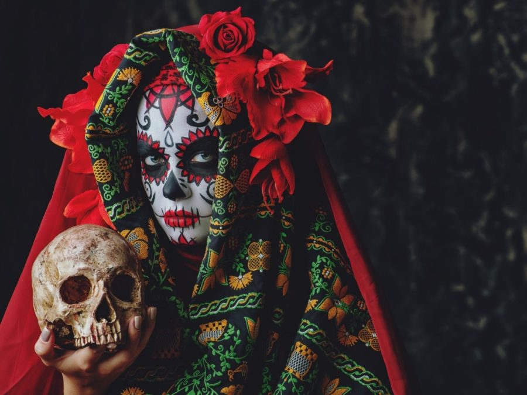
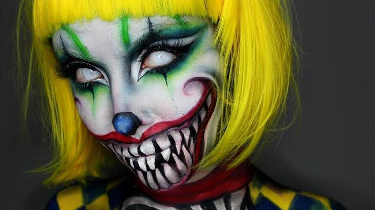

Bienvenidos a nuestra página web, donde conoceremos las características y tradiciones del Día de Muertos y Halloween.

| Temas |
|---|
| Introducción |
| Definición |
| Vestimenta |

El Día de Muertos y Halloween son celebraciones que se realizan entre finales de octubre y principios de noviembre. Aunque tienen diferentes orígenes y significados, ambas forman parte de las tradiciones culturales de diferentes comunidades.
El Día de Muertos es una tradición mexicana dedicada a recordar y honrar a los seres queridos fallecidos. Halloween, por su parte, se caracteriza por los disfraces, las calabazas, los dulces y las decoraciones relacionadas con el misterio.
Volver a los temas
El Día de Muertos es una tradición mexicana en la que las familias recuerdan y honran a sus seres queridos que han fallecido. Entre sus elementos principales se encuentran las ofrendas, las flores de cempasúchil, las veladoras, las fotografías y los alimentos.

Halloween es una celebración que se realiza el 31 de octubre. Actualmente es conocida por los disfraces, las calabazas, los dulces y las decoraciones de personajes y criaturas relacionadas con el terror y lo sobrenatural.
Volver a los temas
Durante el Día de Muertos algunas personas utilizan vestimenta tradicional mexicana o se caracterizan como Catrinas y Catrines. El maquillaje de calavera es uno de los elementos más conocidos y puede decorarse con flores y diferentes colores.

Durante Halloween es común utilizar disfraces de brujas, fantasmas, monstruos, vampiros y personajes fantásticos. Las personas también utilizan máscaras, maquillaje y accesorios para complementar sus disfraces.
Volver a los temas